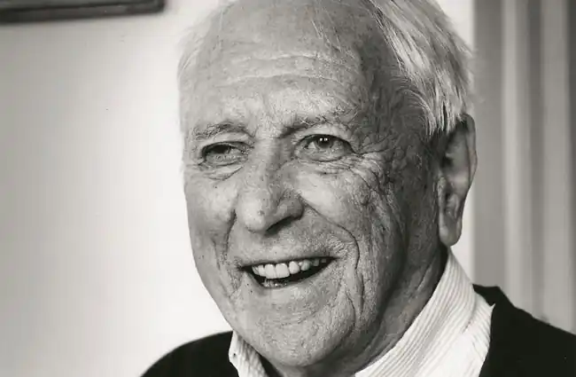
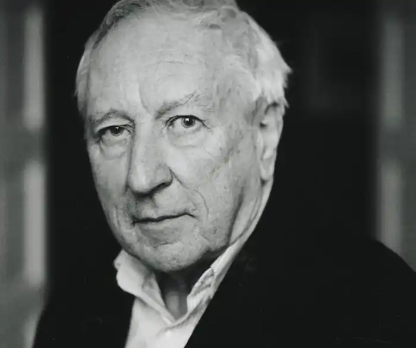

То́мас (Ту́мас) Є́ста Транстре́мер (швед. Tomas Gösta Tranströmer; 15 квітня 1931, Стокгольм — 26 березня 2015) — видатний шведський поет XX століття, лауреат Нобелівської премії з літератури 2011 року "за стислі та пронизливі образи, які дали читачам свіжий погляд на реальність".
Транстремер, нарівні з Еммануїлем Сведенборгом, Августом Стріндбергом та Інгмаром Бергманом, світовою культурною громадськістю розглядається як один з тих, хто виходить за рамки вузько-національного і становить так зване обличчя національного шведського світосприйняття в загальному світовому та інтернаціональному контексті.
Біографія Томас Транстремер здобув середню освіту в Південній латинській школі в Стокгольмі і отримав диплом психолога в Стокгольмському університеті в 1956 році. Додатково вивчав історію, релігію і літературу. За основною професією — лікар-психолог, працював спочатку у в'язниці для неповнолітніх, згодом — з інвалідами, які втратили працездатність унаслідок трудового каліцтва, ув'язненими і наркоманами. Професійний піаніст. Творчість Найвпливовіший скандинавський поет останніх десятиліть. Почав писати в 13 років. Свій перший збірник віршів 17 dikter (Сімнадцять віршів) опублікував у 1954 році. У 1993 році видав свою коротку автобіографію Minnena ser mig (Спогади споглядають на мене). Інші поети, особливо "політичних" 1970-х, звинуватили Транстремера у відстороненні від власної традиції і політичних процесів. Проте поет працював у межах модерністських, експресіоністських і сюрреалістичних тенденцій в поезії ХХ століття. Його ясні, прості картинки з повсякденного життя і природи показують містичну проникливість універсальних аспектів людського розуму. На початку 1990-х років був вражений інсультом, від чого у нього відняло праву частину тіла, мову і здатність володіти пером. Але він навчився писати лівою рукою і навіть став виконувати музику для "лівої руки" на фортепіано, часто написану спеціально для нього сучасними західними композиторами. Томас Транстремер — автор 12 книг віршів і прози. Твори поета перекладено 60 мовами. Його остання робота, збірка віршів Den stora gåtan (Велика таїна), була опублікована у 2004 році. 6 жовтня 2011 року Нобелівський комітет оголосив про присудження Нобелівської премії з літератури Томасу Транстремеру. Окрім того, Транстремер був нагороджений Поетичною премією видавництва Бонніер, Міжнародною премією в галузі літератури (Нойштадт), Премією Петрарки (Німеччина), Золотим вінком Струзьких вечорів поезії, Шведською премією Міжнародного поетичного форуму та ін. Майже все життя провів у місті Вестерос. Останні роки жив разом із дружиною Монікою в Стокгольмі.